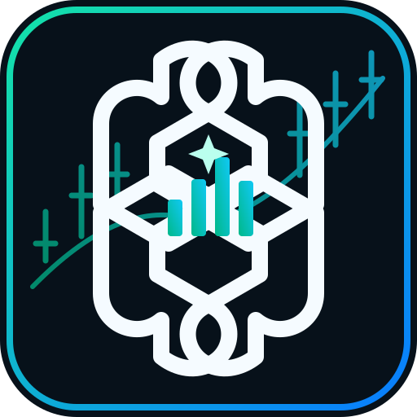

gpt-Mi
Sharia Market Intelligence
قرارات أوضح.
ومخاطر محسوبة.
منصة تحليل ومتابعة للأسهم المصرية المتوافقة مع الشريعة، مع توضيح مصدر البيانات وتاريخها وأسباب الإشارة ومخاطرها.
تحليل السوقمؤشرات فنية وسياق السوق
انضباط شرعيمنع شراء الأسهم غير المعتمدة
إدارة المخاطروقف خسارة ومراجعة الإشارة
هذه صفحة تثبيت وهوية gpt-Mi على GitHub Pages. GitHub Pages يستضيف الملفات الثابتة ولا يشغّل تطبيق Python/Streamlit نفسه؛ لذلك يلزم ربط عنوان نشر Streamlit الفعلي حتى يفتح التطبيق الكامل من الأيقونة. لن نعرض بيانات سوق تجريبية على أنها بيانات حقيقية.